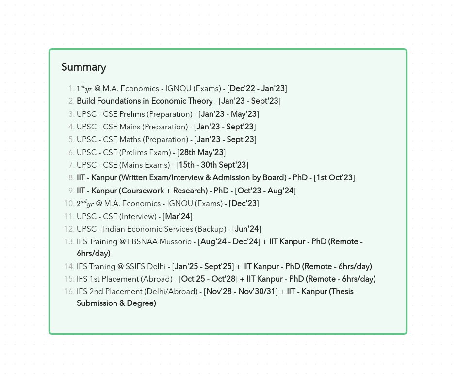

PhD at IIT - Kanpur

I'm Hasanth, I graduated from IIT-Kharagpur with a Bachelors in Instrumentation Engg. (Dept. of Electrical Engg.) in 2016 and worked as a Software Engineer - II for one year at Hewlett Packard Enterprise - R&D between 2016-17 (resigned).
In June 2019, I was supposed to join University at Buffalo / University of Texas at Dallas (with scholarship) for my Masters in CS, but due to some personal reasons I've dropped my plan and been preparing and appeared for UPSC-Civil Services Exam (CSE), with Maths as my optional subject (Syllabus includes B.Sc/M.Sc level subjects - Real Analysis, Algebra, ODEs & PDEs, Mathematical Physics - Fluid Dynamics, Linear Programming etc.).
Last year in Sept'22, I gave my UPSC-Mains (Stage-II) exam after clearing the Prelims but unfortunately couldn't make it to the final list.
Prior to this, I was interested in Theoretical CS with an inclination towards Economics, especially I was looking forward to working with Siddharth Barman (Fair Division etc.) at IISC down the line in future. After changing the plan to pursue UPSC, I made a decision to delay my PhD pursuit for 5-7 years after joining the service (which the govt. allows).
But it was only in the last Oct'22, I came across similar lines of research being done by You & Prof. Souvik Roy at ISI-Kolkata, Prof. Debasis Mishra & Prof. Arunava Sen at ISI-Delhi etc., but from an Economics standpoint. In my search, I've also found that there exists an opportunity of pursuing a part-time PhD at ISI-Kolkata/Delhi & IITs - Kanpur, Delhi etc., which has got me very excited and made me revive my plan to pursue PhD.
In this regard, while continuing my preparation for UPSC-CSE to appear in 2023 (Prelims - May'23, Mains - Sept'23), I've also started to pick up the basics of Economics from Oct'22 with the help of M.A. Economics at IGNOU (as I could get a M.A. degree remotely) and gave my 1st year exams in Dec'22-Jan'23.
But UPSC-CSE exam being extremely demanding in memory and time, I'm unable to complete the foundations required well within the time to appear for ISI-JRF(QE) exam being held in May'23, especially reading Macro, Econometrics etc., appears more than my interests for now due to my time being constrained. UPSC-Prelims is also being conducted in the same month as ISI-JRF (QE) in May'23.
As I'm aiming to secure a top rank in the final list without a compromise, I have decided to go back on ISI-JRF (QE) searching for alternatives which would allow me to take an admission in a part-time PhD program starting from Sept'23, soon after I finish with my UPSC-CSE (Mains) exam.
By this, I will also get more than enough time to concretely build my foundations in Economic Theory. Above all, it would provide me enough time (till Sept'23) to read some papers and also pick up the trending research directions in the subjects - Mechanism Design, Game Theory, Choice & Decision Theory etc..
How will a part-time PhD benefit me, as I will be joining Civil Services ?
I will be choosing Indian Foreign Service as my first cadre preference, where working in strategic environments happens to be the core aspect of the job. Even though the work may not be directly related to the research work I wish to do in (Mechanism Design, Game Theory, Choice, Decision Theory etc. primarily, if possible some other areas in Maths & TCS as well), it would provide enough on ground insights which can be aligned with above research topics. Also, a PhD work relating to such strategic analysis would make me a front runner in leading either the Economics/Political Wings within the Indian Foreign Service.
By pursuing part-time while being in the service, I shall be secure and not have to worry about career & family etc. much, and can pursue research whole-heartedly with dedication.
As I will be joining the service (IFS) in Aug'24, I would only seek assistance or fellowship for the period Sept'23 to Aug'24, after that other than access to journals, travel grants and book-purchases, I won't be needing any kind of monetary assistance for my part-time PhD pursuit.
Finally, to conclude, I've always been a theory enthusiast starting from my Bachelors (when working for my thesis identifying mistakes in the algorithm of an IEEE-TPAMI Paper - A+ rating ML Theory Journal in 2015-16 (now it's NeurIPS)), till today in the intersection of Maths, Theoretical CS & Economics etc. areas, pursuing a PhD was always part of my plan, it was only the matter of time (when) that has changed.
Discussions
Comments powered by Disqus